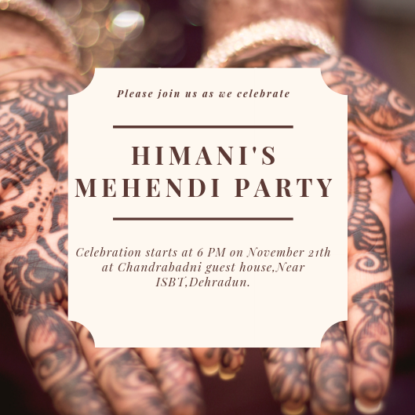
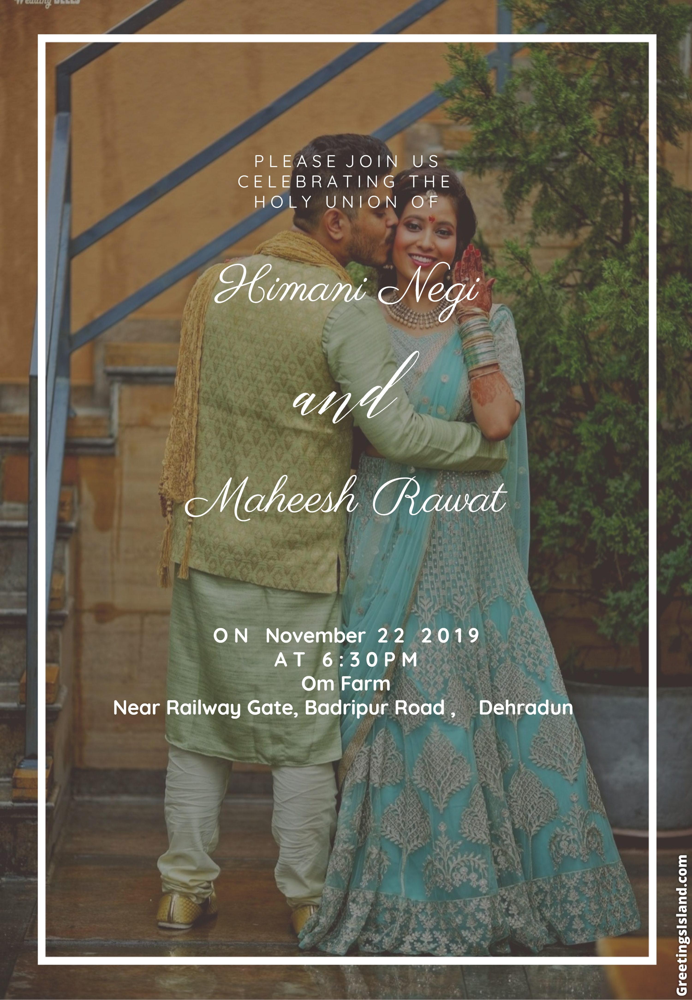

We are getting hitched
The dates are 21th & 22th of November '19 and we would like you to be a part of it.
Events
21th November

Mehndi 6PM - 8PM
It's one of the oldest traditional Indian pre wedding ceremony where the bride and groom attend the event together and a professional mehndi artist applies mehndi to the bride's hands and feet. This will be having a celebratory festival feel to it with people wearing vibrant clothes and dancing, singing, playing games and a lot more.
Cocktail Night 7PM - 12AM
This event is no way close to ethnic. The bride & groom would like to have some "shots before the knot". With booze flowing down the floor and the western attire on, everyone would be busy showing off their new moves on the stage which they have finely honed. Lastly, expect some beer pong matches & karaoke for sure.

22th November
Haldi 10AM-11AM
The haldi ceremony is usually held separately for the bride and the groom. This one is for the bride. It is a low-key event that involves the application of turmeric paste on the hands, legs and face of the bride. The groom is not allowed to see the bride after this ritual until the final wedding ceremony starts.
Wedding 6PM-12AM
This is the main event in the entire wedding when the bride and the groom tie the knot. The groom comes with the barat and is greeted by the bride side with some dhol of course as maximum number of guests would be attending this event. This is when the couple circle the sacred fire and are finally declared husband and wife.